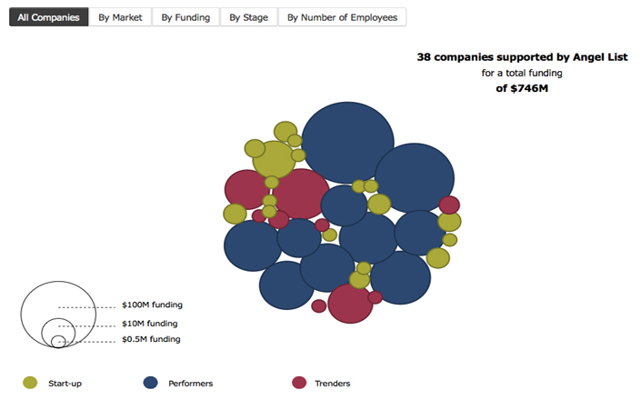
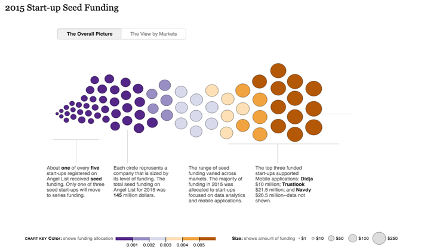
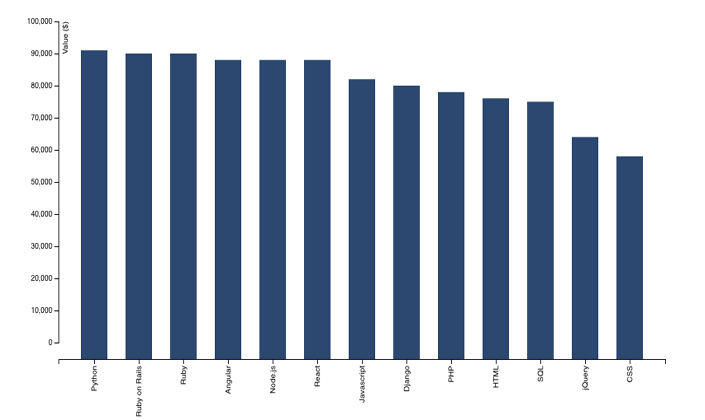
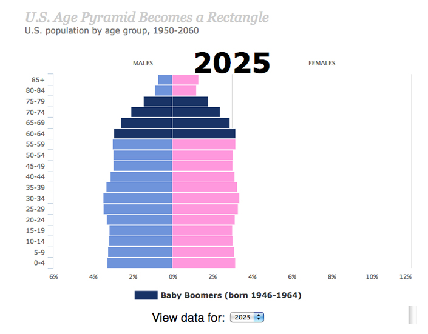
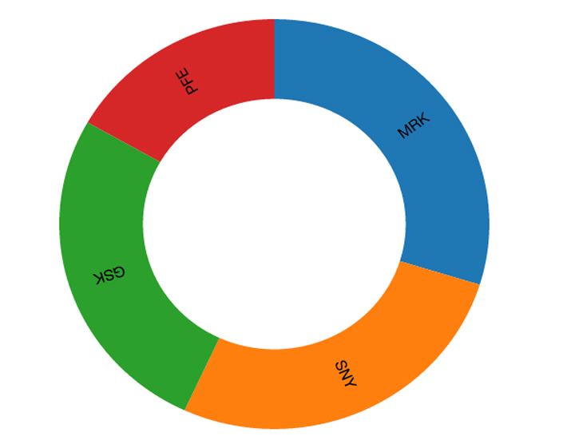
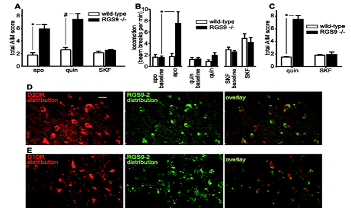
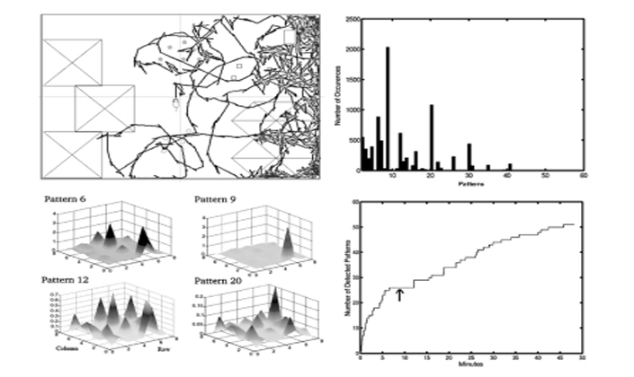
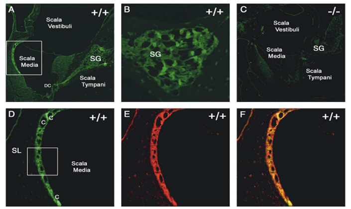

Turning DATA into information,
information into INSIGHT.
Resume of Sami Barghshoon
Visual Analytics
I can turn a sea of data
into data you can see
2010 - 2015 start-ups Angel List investors supported
2015 investment pattern on Angel List
Angel List salary distribution by programming language
An analysis of the baby boom cohort in the US
Stock price review of four pharmaceutical organizations
Data Science
The two proteins involved in Parkinson's disease
Information processing in cultured neural networks
Events associated with deafness in mice
MKTG & Sales
Marketing Consultant
- Analyzed product portfolio to identify new opportunities
- Developed metrics dashboard of performance
- Supported CRM tools to facilitate lead generation

Sr. Global Product Manager

Account Sales Manager
- Managed Pfizer, Sanofi, Genzyme, and Merck accounts
- Analyzed sales data to determine growth opportunities
- Presented on-site seminars and lab demos

Market Manager
Strategy & Market Analytics
- Analyzed market to better understand customer needs
- Supported short- and long-term strategic planning
- Evaluated competitive landscape and pricing strategies

Marketing Research Executive
- Evaluated advertising campaigns for biopharma clients
- Assessed positioning statements for various therapeutics
- Analyzed research data using statistical tools
Other Places
- California Institute of Technology - Research Assistant
- Foothills Municipal Hospital - Nursing Assistant
Education
Programming - Web Development

MBA - Science & Technology Marketing
BSc - Cellular, Molecular, Microbial Bio
Why hire me?
I think about data beyond bar charts, pie
charts, etc. and ask questions such as:
How can data be transformed into shape, size, position & colour?
And what insights come from this transformation?
By transforming rows and columns
into visual models...
...more context can be provided
to make better business decisions.
Let's talk
Email:
sami.barghshoon@gmail.com
Telephone:
(617) 335-7630